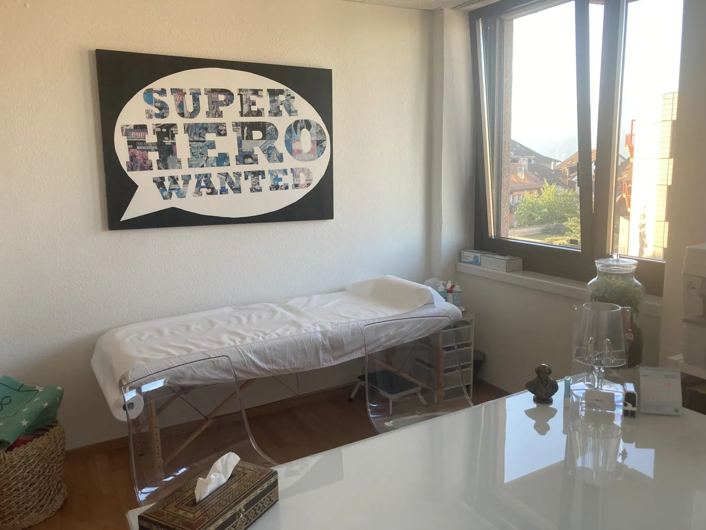
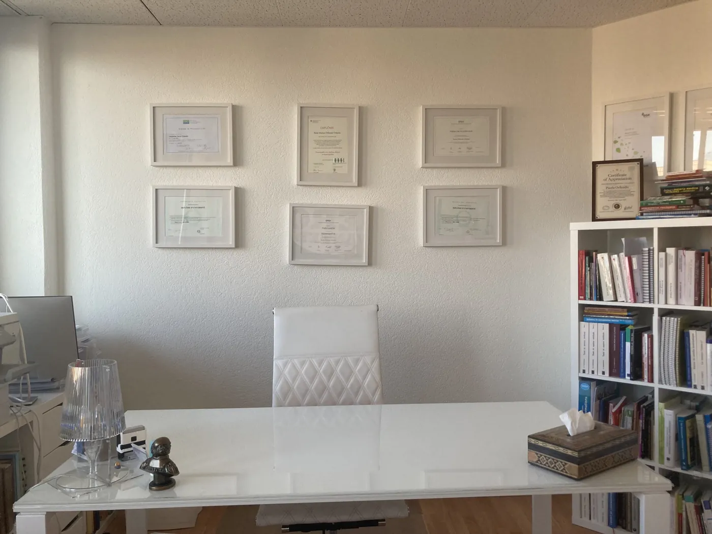
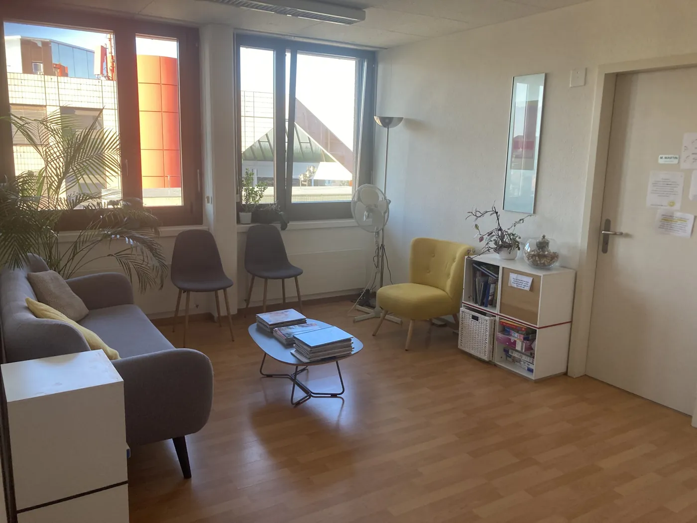
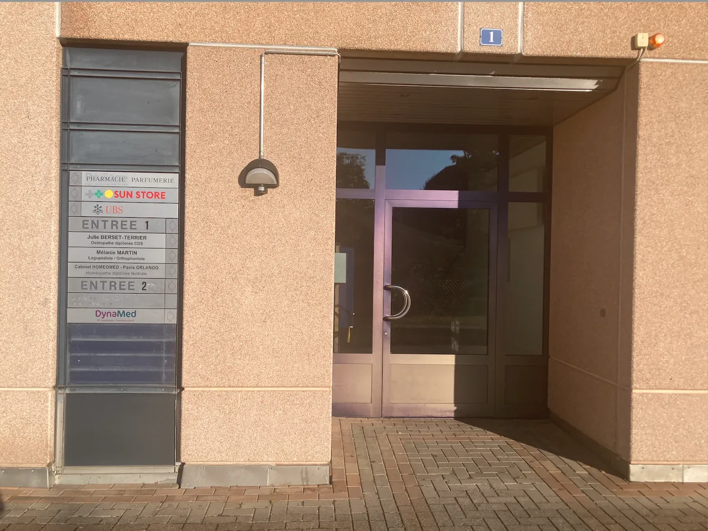
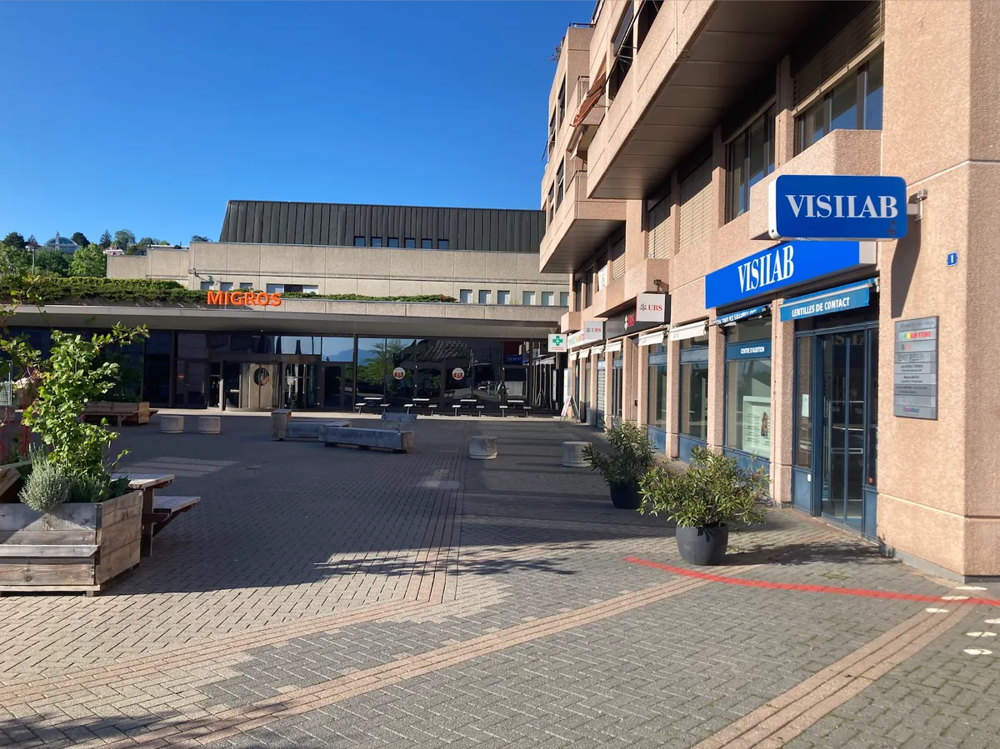

Votre homéopathe à Pully – Lausanne
Je vous accueille dans un espace lumineux, calme et apaisant, en plein cœur de Pully. Chaque détail a été pensé pour que vous vous sentiez écouté·e, respecté·e et à votre place.






Un cadre qui apaise, qui soutient… et qui invite à avancer
- Une salle de consultation chaleureuse, claire et fonctionnelle
- Un espace d’attente simple et confortable
- Un coin spécialement aménagé pour les plus petits
- Un cadre confidentiel et professionnel, propice à un échange authentique
Ce lieu reflète ma façon de travailler : un espace clair, posé, sans agitation inutile. Un endroit où l’on peut se déposer, reprendre pied, et entamer un travail thérapeutique profond mais structuré.
Horaires des consultations
Au cabinet de Pully ou en visio. Sur rendez-vous uniquement.
- Lundi, mardi, mercredi8h00 – 18h00
- Jeudià Fribourg
- Vendredi matin8h00 – 13h00
- Vendredi après-midiFermé
- Samedi & dimancheFermé
Comment accéder au cabinet ?
Place Neuve 1, 1009 Pully — 1er étage, dans la zone piétonne, juste derrière le magasin Visilab.
Accessibilité
Le cabinet est situé au 1er étage, avec accès par ascenseur ou escaliers.
À pied
Zone piétonne de la Place Neuve. L’entrée se situe à l’arrière du magasin Visilab, côté place de jeu. Suivez la signalétique.
En voiture
Parking recommandé : Pully-Centre (Migros Pully). Places de parc extérieures également à proximité.
En train
Depuis la gare de Pully, le cabinet est à seulement 1 minute à pied.
En transports publics
- Arrêt Pully-Clergère (lignes 9, 47, 49) – 3 min à pied
- Arrêt Gare (lignes 8, 25, 47, 48) – 5 min à pied
- Arrêt Pully-Centre (ligne 47) – 3 min à pied
Mes services à Pully – Lausanne
Tous mes accompagnements sont proposés au cabinet de Pully.
- Bébé, enfant & adolescentà Pully – Lausanne
- Équilibre féminin & hormonalà Pully – Lausanne
- ORL, allergies, peauà Pully – Lausanne
- Soins de support en oncologieà Pully – Lausanne
- Accompagnement TDAHà Pully – Lausanne
- TCC du sommeilà Pully – Lausanne
- Bébé : allaitement & sommeilà Pully – Lausanne
- Autres accompagnementsà Pully – Lausanne
Questions fréquentes sur le cabinet de Pully
Où se trouve l’entrée du cabinet à Pully ?
Place Neuve 1, dans la zone piétonne de Pully. L’entrée du bâtiment se situe à l’arrière du magasin Visilab, côté place de jeu. Le cabinet est au 1er étage, accessible par ascenseur ou escaliers.
Où me garer près du cabinet de Pully ?
Le parking recommandé est celui de Pully-Centre (Migros Pully). Des places de parc extérieures sont également disponibles à proximité.
Comment venir depuis Lausanne en transports publics ?
En train, le cabinet est à 1 minute à pied de la gare de Pully. En bus : arrêt Pully-Clergère (lignes 9, 47, 49) ou Pully-Centre (ligne 47) à 3 minutes à pied, arrêt Gare (lignes 8, 25, 47, 48) à 5 minutes.
Quels jours consultez-vous à Pully ?
Les lundis, mardis et mercredis de 8h à 18h, et le vendredi matin de 8h à 13h, sur rendez-vous uniquement. Le jeudi, je consulte à Fribourg.
Recevez-vous les enfants et les bébés à Pully ?
Oui, dès la naissance. Un coin est spécialement aménagé pour les plus petits dans la salle d’attente.
Votre rendez-vous à Pully – Lausanne
Pour qui est la consultation ?
Pour quel motif ?
Où souhaitez-vous consulter ?
Type de rendez-vous
Reconnue ASCA · RME · Visana · EGK — remboursé par la plupart des assurances complémentaires.
Comment me contacter ?
Prise de rendez-vous en ligne 24h/24, par téléphone ou par e-mail. Si je suis en consultation, laissez un message : je vous rappelle dès que possible.
Téléphone
Horaires
Pully : lun – mer 8h – 18h, ven 8h – 13h
Fribourg : jeudi 9h – 18h
Sur rendez-vous uniquement